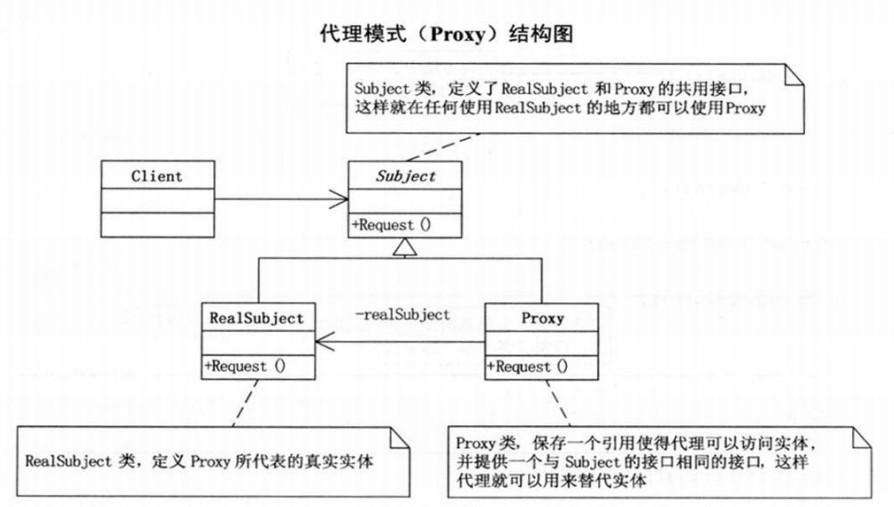
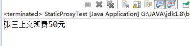
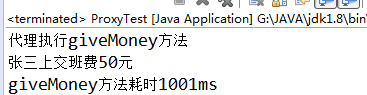

以下文章来自：java动态代理实现与原理详细分析
关于Java中的动态代理，我们首先需要了解的是一种常用的设计模式–代理模式，而对于代理，根据创建代理类的时间点，又可以分为静态代理和动态代理。
一、代理模式
代理模式是常用的java设计模式，他的特征是代理类与委托类有同样的接口，代理类主要负责为委托类预处理消息、过滤消息、把消息转发给委托类，以及事后处理消息等。代理类与委托类之间通常会存在关联关系，一个代理类的对象与一个委托类的对象关联，代理类的对象本身并不真正实现服务，而是通过调用委托类的对象的相关方法，来提供特定的服务。简单的说就是，我们在访问实际对象时，是通过代理对象来访问的，代理模式就是在访问实际对象时引入一定程度的间接性，因为这种间接性，可以附加多种用途。在后面我会解释这种间接性带来的好处。代理模式结构图（图片来自《大话设计模式》）：

二、静态代理
静态代理
静态代理：由程序员创建或特定工具自动生成源代码，也就是在编译时就已经将接口，被代理类，代理类等确定下来。在程序运行之前，代理类的.class文件就已经生成。
静态代理简单实现
根据上面代理模式的类图，来写一个简单的静态代理的例子。我这儿举一个比较粗糙的例子，假如一个班的同学要向老师交班费，但是都是通过班长把自己的钱转交给老师。这里，班长就是代理学生上交班费，
班长就是学生的代理。
首先，我们创建一个Person接口。这个接口就是学生（被代理类），和班长（代理类）的公共接口，他们都有上交班费的行为。这样，学生上交班费就可以让班长来代理执行。
1 | /** |
Student类实现Person接口。Student可以具体实施上交班费的动作。
1 | public class Student implements Person { |
StudentsProxy类，这个类也实现了Person接口，但是还另外持有一个学生类对象，由于实现了Peson接口，同时持有一个学生对象，那么他可以代理学生类对象执行上交班费（执行giveMoney()方法）行为。
1 | /** |
下面测试一下，看如何使用代理模式：
1 | public class StaticProxyTest { |
运行结果：

这里并没有直接通过张三（被代理对象）来执行上交班费的行为，而是通过班长（代理对象）来代理执行了。这就是代理模式。
代理模式最主要的就是有一个公共接口（Person），一个具体的类（Student），一个代理类（StudentsProxy）,代理类持有具体类的实例，代为执行具体类实例方法。上面说到，代理模式就是在访问实际对象时引入一定程度的间接性，因为这种间接性，可以附加多种用途。这里的间接性就是指不直接调用实际对象的方法，那么我们在代理过程中就可以加上一些其他用途。就这个例子来说，加入班长在帮张三上交班费之前想要先反映一下张三最近学习有很大进步，通过代理模式很轻松就能办到：
1 | public class StudentsProxy implements Person{ |
运行结果：

可以看到，只需要在代理类中帮张三上交班费之前，执行其他操作就可以了。这种操作，也是使用代理模式的一个很大的优点。最直白的就是在Spring中的面向切面编程（AOP），我们能在一个切点之前执行一些操作，在一个切点之后执行一些操作，这个切点就是一个个方法。这些方法所在类肯定就是被代理了，在代理过程中切入了一些其他操作。
三、动态代理
动态代理
代理类在程序运行时创建的代理方式被成为动态代理。 我们上面静态代理的例子中，代理类(studentProxy)是自己定义好的，在程序运行之前就已经编译完成。然而动态代理，代理类并不是在Java代码中定义的，而是在运行时根据我们在Java代码中的“指示”动态生成的。相比于静态代理， 动态代理的优势在于可以很方便的对代理类的函数进行统一的处理，而不用修改每个代理类中的方法。 比如说，想要在每个代理的方法前都加上一个处理方法：
1 | public void giveMoney() { |
这里只有一个giveMoney方法，就写一次beforeMethod方法，但是如果出了giveMonney还有很多其他的方法，那就需要写很多次beforeMethod方法，麻烦。那看看下面动态代理如何实现。
动态代理简单实现
在java的java.lang.reflect包下提供了一个Proxy类和一个InvocationHandler接口，通过这个类和这个接口可以生成JDK动态代理类和动态代理对象。
创建一个动态代理对象步骤，具体代码见后面：
- 创建一个InvocationHandler对象
1 | //创建一个与代理对象相关联的InvocationHandler |
- 使用Proxy类的getProxyClass静态方法生成一个动态代理类stuProxyClass
1 | Class<?> stuProxyClass = Proxy.getProxyClass(Person.class.getClassLoader(), new Class<?>[] {Person.class}); |
- 获得stuProxyClass 中一个带InvocationHandler参数的构造器constructor
1 | Constructor<?> constructor = PersonProxy.getConstructor(InvocationHandler.class); |
- 通过构造器constructor来创建一个动态实例stuProxy
1 | Person stuProxy = (Person) cons.newInstance(stuHandler); |
就此，一个动态代理对象就创建完毕，当然，上面四个步骤可以通过Proxy类的newProxyInstances方法来简化：
1 | //创建一个与代理对象相关联的InvocationHandler |
到这里肯定都会很疑惑，这动态代理到底是如何执行的，是如何通过代理对象来执行被代理对象的方法的，先不急，我们先看看一个简单的完整的动态代理的例子。还是上面静态代理的例子，班长需要帮学生代交班费。首先是定义一个Person接口:
1 | /** |
创建需要被代理的实际类：
1 | public class Student implements Person { |
再定义一个检测方法执行时间的工具类，在任何方法执行前先调用start方法，执行后调用finsh方法，就可以计算出该方法的运行时间，这也是一个最简单的方法执行时间检测工具。
1 | public class MonitorUtil { |
创建StuInvocationHandler类，实现InvocationHandler接口，这个类中持有一个被代理对象的实例target。InvocationHandler中有一个invoke方法，所有执行代理对象的方法都会被替换成执行invoke方法。
再再invoke方法中执行被代理对象target的相应方法。当然，在代理过程中，我们在真正执行被代理对象的方法前加入自己其他处理。这也是Spring中的AOP实现的主要原理，这里还涉及到一个很重要的关于java反射方面的基础知识。
1 | public class StuInvocationHandler<T> implements InvocationHandler { |
做完上面的工作后，我们就可以具体来创建动态代理对象了，上面简单介绍了如何创建动态代理对象，我们使用简化的方式创建动态代理对象：
1 | public class ProxyTest { |
我们执行这个ProxyTest类，先想一下，我们创建了一个需要被代理的学生张三，将zhangsan对象传给了stuHandler中，我们在创建代理对象stuProxy时，将stuHandler作为参数了的，上面也有说到所有执行代理对象的方法都会被替换成执行invoke方法，也就是说，最后执行的是StuInvocationHandler中的invoke方法。所以在看到下面的运行结果也就理所当然了。
运行结果：

上面说到，动态代理的优势在于可以很方便的对代理类的函数进行统一的处理，而不用修改每个代理类中的方法。是因为所有被代理执行的方法，都是通过在InvocationHandler中的invoke方法调用的，所以我们只要在invoke方法中统一处理，就可以对所有被代理的方法进行相同的操作了。例如，这里的方法计时，所有的被代理对象执行的方法都会被计时，然而我只做了很少的代码量。
动态代理的过程，代理对象和被代理对象的关系不像静态代理那样一目了然，清晰明了。因为动态代理的过程中，我们并没有实际看到代理类，也没有很清晰地的看到代理类的具体样子，而且动态代理中被代理对象和代理对象是通过InvocationHandler来完成的代理过程的，其中具体是怎样操作的，为什么代理对象执行的方法都会通过InvocationHandler中的invoke方法来执行。带着这些问题，我们就需要对java动态代理的源码进行简要的分析，弄清楚其中缘由。
四、动态代理原理分析
1、Java动态代理创建出来的动态代理类
上面我们利用Proxy类的newProxyInstance方法创建了一个动态代理对象，查看该方法的源码，发现它只是封装了创建动态代理类的步骤(红色标准部分)：
1 | public static Object newProxyInstance(ClassLoader loader, |
其实，我们最应该关注的是Class<?> cl = getProxyClass0(loader, intfs);这句，这里产生了代理类，后面代码中的构造器也是通过这里产生的类来获得，可以看出，这个类的产生就是整个动态代理的关键，由于是动态生成的类文件，我这里不具体进入分析如何产生的这个类文件，只需要知道这个类文件时缓存在java虚拟机中的，我们可以通过下面的方法将其打印到文件里面，一睹真容：
1 | byte[] classFile = ProxyGenerator.generateProxyClass("$Proxy0", Student.class.getInterfaces()); |
对这个class文件进行反编译，我们看看jdk为我们生成了什么样的内容：
1 | import java.lang.reflect.InvocationHandler; |
jdk为我们的生成了一个叫$Proxy0（这个名字后面的0是编号，有多个代理类会一次递增）的代理类，这个类文件是放在内存中的，我们在创建代理对象时，就是通过反射获得这个类的构造方法，然后创建的代理实例。通过对这个生成的代理类源码的查看，我们很容易能看出，动态代理实现的具体过程。
我们可以把InvocationHandler看做一个中介类，中介类持有一个被代理对象，在invoke方法中调用了被代理对象的相应方法。通过聚合方式持有被代理对象的引用，把外部对invoke的调用最终都转为对被代理对象的调用。
代理类调用自己方法时，通过自身持有的中介类对象来调用中介类对象的invoke方法，从而达到代理执行被代理对象的方法。也就是说，动态代理通过中介类实现了具体的代理功能。
五、总结
生成的代理类：$Proxy0 extends Proxy implements Person，我们看到代理类继承了Proxy类，所以也就决定了java动态代理只能对接口进行代理，Java的继承机制注定了这些动态代理类们无法实现对class的动态代理。 上面的动态代理的例子，其实就是AOP的一个简单实现了，在目标对象的方法执行之前和执行之后进行了处理，对方法耗时统计。Spring的AOP实现其实也是用了Proxy和InvocationHandler这两个东西的。